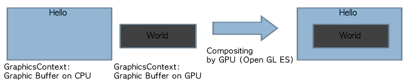
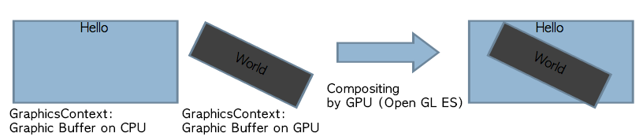
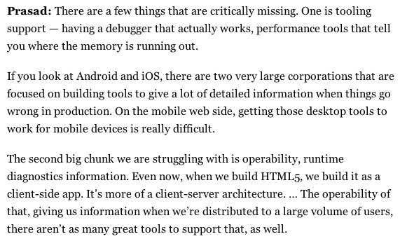
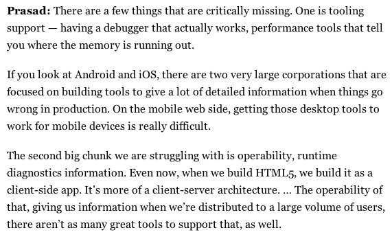

- 안정화된 상용 Platform 수준으로 성숙치 않은 HTML5 기반 상품화의 성공은, 기반하는 Engine 이해가 필수적
- 무엇을 얼마만큼 할수 있는지를 알아야 뛰어난 Web App을 개발 할 수 있다.
- Blackbox로 두지 말고 Tool을 활용하여 분석하자. Native 대비 부족하지만 급격히 기능이 좋아지고 있다.
- Web inspector를 통한 다양한 profiling 기능이 제공되기 시작함
통통 두드리지만 말고
내부가 어떻게 동작하지? 알아보자
* 최고의 Web App개발을 위해
Webkit 엔진 내부구조의 이해와 Web Application 성능 개선 Practice
임상석, SK 플래닛
thanks to impress.js for prezi-like styling
Professional 운전자, 정비사는 차내부를 얼마나 알아야할까?

HTML5: Hype or Hope?

Mobile 단말에서 HTML5의 현실

function deviceFragmentationHandler() {
//set to use deviceProfileManager
var effect = window.getEffect(),
device = window.getDeviceInfo();
//fragmentation handling is done in three phases
//For the first, OS version based tunable paramenter setting
//For the secnod, device model based setting as an exception from the OS version
//For the third, browser type based setting as an exception from the OS version
//Start from OS version based
if( (/Android/i).test(device.os) ){
scrollerConfig.scrollBar = false;
appConfig.resizeDelay = 300;
}
if( (/Android 2/i).test(device.os) ){
scrollerConfig.smartScrolling = true;
scrollerConfig.momentumDistCap = window.innerHeight*2;
scrollerConfig.updateOnScrollEnd = true;
scrollerConfig.offsetYMargin = window.innerHeight*2;
scrollerConfig.minYDelta = window.innerHeight*1;
scrollerConfig.useTransition = false;
scrollerConfig.useRequestAniFrame = false;
appConfig.mainListHighlight = false;
//안드로이드 2버전에서는 transition 없이 페이지 이동
appConfig.transition = "none";//slide disable
}
if( (/Android 4.0/i).test(device.os) ){
scrollerConfig.smartScrolling = true;
momentumDistCap = window.innerHeight*3;//iScroll momentun flick distance's maximum value
updateOnScrollEnd = false; //not update during scrolling, but do right after scrolling
offsetYMargin = window.innerHeight*4;
minYDelta = window.innerHeight*4;
scrollerConfig.useTransition = false;
scrollerConfig.useRequestAniFrame = false;
}
if( (/Android 4.1/i).test(device.os) ){
scrollerConfig.smartScrolling = true;
scrollerConfig.momentumDistCap = window.innerHeight*3;
scrollerConfig.offsetYMargin = window.innerHeight*10;
scrollerConfig.minYDelta = window.innerHeight*10;
scrollerConfig.useTransition = false;
scrollerConfig.useRequestAniFrame = true;
}
if( (/iPhone/i).test(device.os) ){
scrollerConfig.scrollBar = true;
appConfig.resizeDelay = 50;
scrollerConfig.useTransition = true;
}
//device model based
if ( (/SHW-M110/i).test(device.modelName) ) {
//Galaxy S, Android 2.3 default setting is partially overriden for this device
scrollerConfig.momentumDistCap = window.innerHeight*3;
scrollerConfig.offsetYMargin = window.innerHeight*2;
scrollerConfig.minYDelta = window.innerHeight*2;
scrollerConfig.useTransition = true;
}
if ( (/SHV-E210/i).test(device.modelName) ) {
//SHV-E210: 갤럭시 S3
if( (/Android 4.0/i).test(device.os) ){
scrollerConfig.useRequestAniFrame = false;
scrollerConfig.useTransition = true;
}
}
if ( (/SHW-M250/i).test(device.modelName) ) {
//SHW-M250: 갤럭시 S2
if( (/Android 4.1/i).test(device.os) ){
scrollerConfig.useTransition = true;
scrollerConfig.smartScrolling = false;
}
}
if ( (/LG-F240/i).test(device.modelName) ) {
//Optimus G Pro
scrollerConfig.useTransition = true;
// scrollerConfig.useRequestAniFrame = true;
}
if ( (/SHV-E250/i).test(device.modelName) ) {
//Galaxy Note II
// scrollerConfig.useRequestAniFrame = false;
}
if ( (/SHV-E270/i).test(device.modelName) ) {
//Galaxy Grand
scrollerConfig.useTransition = true;
scrollerConfig.smartScrolling = true;
}
if(device.browser === "ChromeMobile"){
scrollerConfig.smartScrolling = false;
scrollerConfig.useTransition = false;
//Galaxy S4
if ( (/SHV-E300/i).test(device.modelName) ) {
scrollerConfig.smartScrolling = false;
scrollerConfig.useTransition = true;
}
}
if((device.browser !== "ChromeMobile") !(/iPhone/i).test(device.os)){
$.mobile.defaultTransitionHandler = createHandlerA(false);
$.mobile.transitionHandlers = {
"default": $.mobile.defaultTransitionHandler
};
}
appConfig.fixedElement = effect.fixedElement;
//browser type based
if(!appConfig.useFixedMenu){
appConfig.transition = "none";
}
}
Webkit과 Platform별 Port 이해하기


http://paulirish.com/2013/webkit-for-developers/
Chrome 브라우져 구조: Muli-Process

다중 Layer Painting 절차
- SW rendering path (CPU)
- 하나의 graphic buffer를 할당(mobile에서는 이것도 GPU를 활용하는 texture 임, ana backingstore)
- Z order에 따라 뒤에서 앞으로 칠함: Hello를 칠함 --> World 칠함

- HW 가속 path: Accelerate compositing by GPU
- CPU graphcs buffer와 GraphicsLayer 별 GPU가 접근하는 buffer 생성
- Layer별로 주어진 buffer에 painting: 변경 내용이 없으면 buffer를 그대로 둠
- 모든 결과를 sync후 GPU를 통해서 compositing하여 하나의 결과물로 만든 후 windowing system buffer로 복사


GPU기반 합성
- CPU로 만들어진 texture는 다시 repaint되거나, 가속영역에서 제거되지 않을 경우 OpenGL ES 내에서 연속적인 합성을 위하여 재활용된다.

Web App 개발용 Tooling 현실
 

Chrome Dev Tool: Timeline
- 상단 panel
- Events: 시간축으로 발생한 event를 순차적으로 보여줌
- Frames: 시간축으로 매 frame 단위로 event를 순차적으로 보여줌
- Memory: 메모리 사용 양을 보여줌
- 하단 record panel
- Recalculate Style: 변경된 CSS 속성값에 따라 전체 style 값을 다시 계산
- Layout: 변경된 style값에 따라 element의 위치 값을 재계산
- Paint: layout이 완료된 RenderLayer들에 속한 element들을 z-ordering을 고려하여 그리
- Composite Layers: Document를 구성하는 모든 RenderLayer를 합성하여 화면에 최종 출력
- 각종 event fire: setTimout, requestAnimationFrame등

Long Paint 분석 및 최적화: Continuous Painting Mode
- Chrome canary에서 지원
- 강제적으로 연속적으로 painting을 수행하므로 높은 painting 비용의 element를 쉽게 찾을수 있다: CTRL+H로 hidden


Chrome Dev Tool: on-device
- 설치
- Android SDK 설치
- 단말 Chrome setting에서 USB debugging mode enable
- 단말 케이블 연결
- Dev Tool을 단말에 연결: adb forward tcp:9222 localabstract:chrome_devtools_remote
- PC의 chrome에서 localhost:9222 open 후 연결된 page click
- starting guide: http://www.html5rocks.com/en/mobile/profiling/#toc-starting-guide